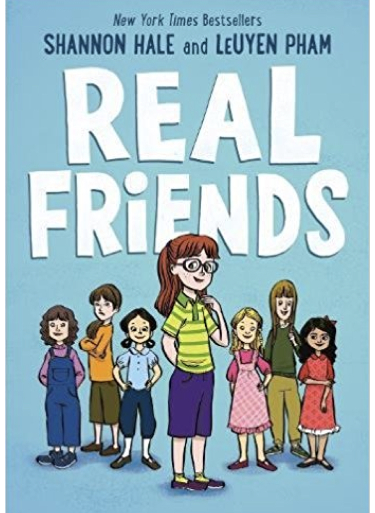
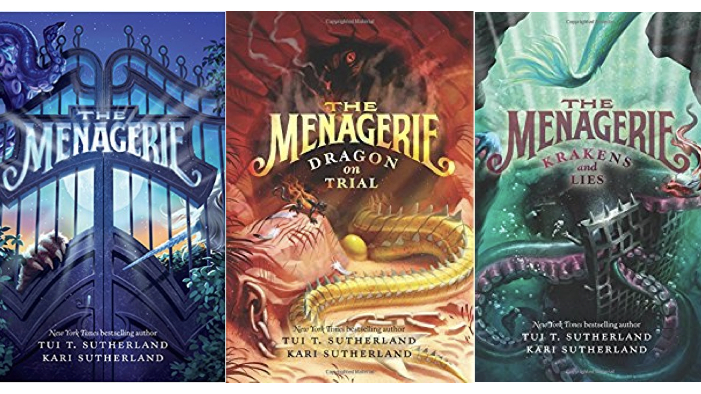
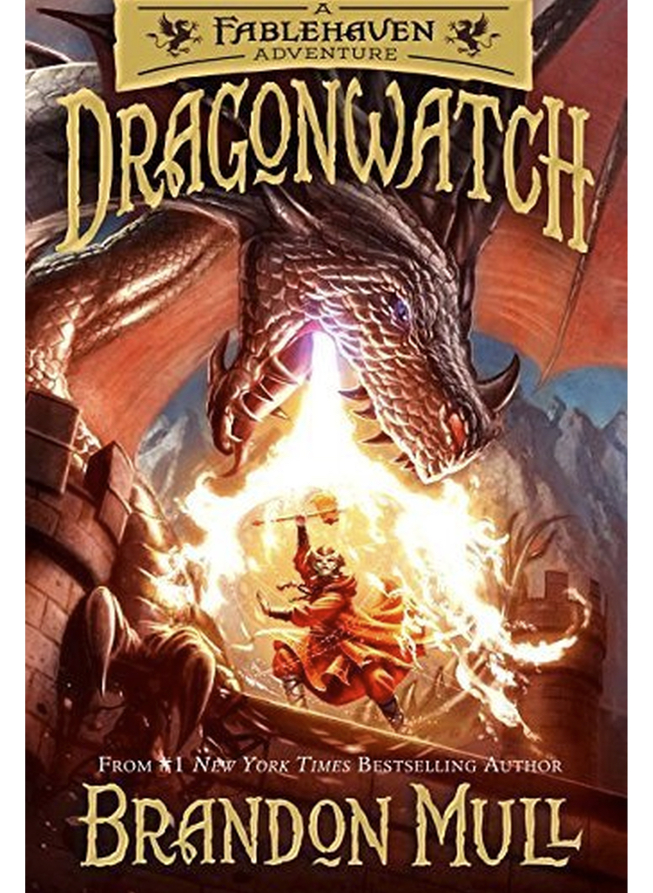
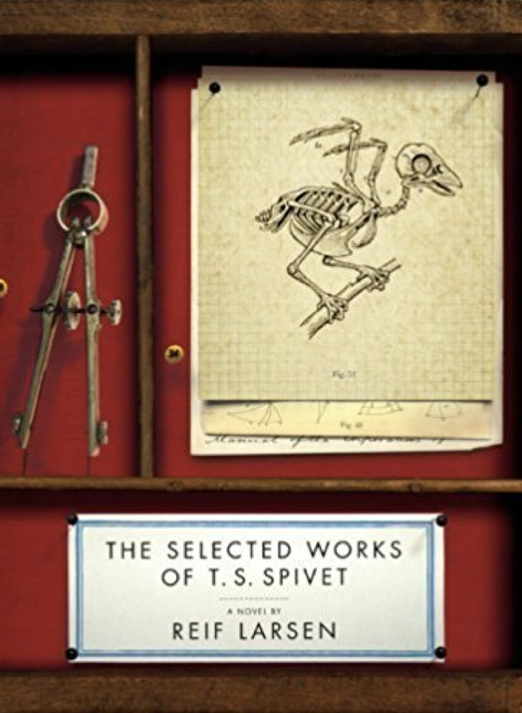
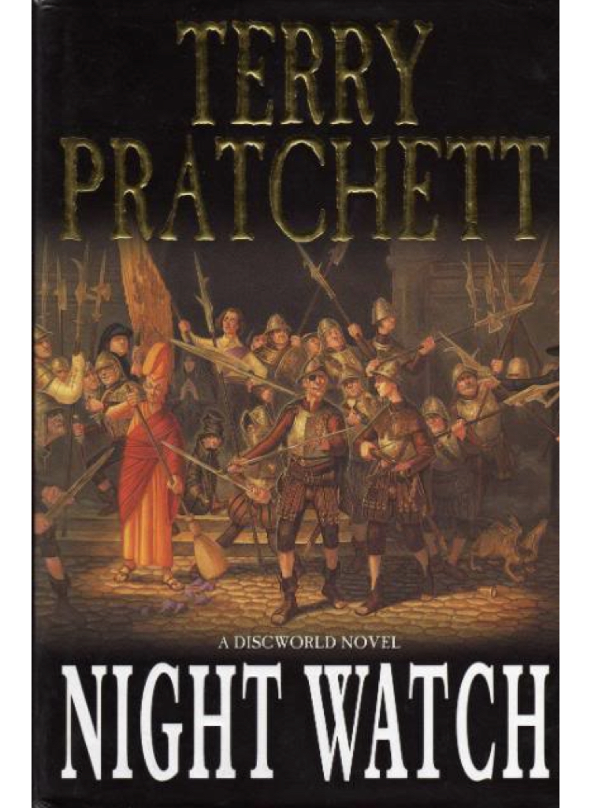

MAY 2017
May was a rather extraordinary month of activity in our household with Science Mom doing over 100 school visits, Math Dad putting together a tenure portfolio, and both of us working on a redesign of this website and an overhaul of the Patreon reward tiers and homepage. Consequently, the first Curious Reader email (which was drafted in February and scheduled to be released in May) was bumped back a month, which means this newsletter has two month’s worth of book reviews for your perusal. :)
Also, in May we leveling up to Green and Purple belts — which our kids think is the “best color” for a Taekwondo belt. Here’s a picture of our family with the lead instructor at our studio:

And now, the body of the newsletter: The photo of the month, notes from my desktop, and book reviews:
PHOTO OF THE MONTH
We went looking for Joshua Tree flowers. They are edible, so we wanted to try a petal or two and see what they tasted like. And the answer is, fairly bitter. Kind of like fresh peas plus unripe cucumbers? Or maybe cauliflower plus a banana peel? You could definitely eat them if starving, but I wouldn’t snack on them voluntarily.

We didn’t find flowers that were close to the ground until after we’d made a couple human ladders to check out tall blooms, which the kids thought was tons of fun. And fortunately for us, no one fell off my shoulders or stumbled onto a cactus.
FROM THE DESKTOP
I confess, I sometimes have a slight feeling of disappointment when I compare my sketches to my finished cartoons. It’s not because I’m not inking them in well enough (although that does happen too.) It’s because the sketch is something loose and not-quite-yet-pinned-down, while the finished cartoon is definite.
The sketch points to a variety of possibilities: it could come to life with paints or colored pencils or crayons or markers. It could be inked in along the center lines or the edge lines–or some combination of the two. Or it could just stay a sketch. My mind sees those many possibilities in one, and the potential is appealing.

This happens in my writing too-I’ll have thoughts or scenes that feel like true gems, and when I wrestle them onto paper, they change. Sometimes they dim and tarnish, the actual art falls so short of its inspiration. But sometimes I’ll discover something new as I’m working, and I end up with something different and perhaps better than what I aimed for initially.

I think this yin and yang tug of disappointment and happy discovery is a natural part of the creative process. And when we do have a day where that transition from imagined to definite leaves us gloomy, or there’s an ache for the loss of shadow lines that hinted at larger possibilities-I find it helpful to think of the finished product as being akin to meeting a new person.
That person or creation might not be who or what I expected, and it’s because of that, not despite it, that I look forward to the introduction. Each creation has its own story and gifts to share.
BOOK REVIEWS
And last, but not least, we have book reviews! I’ve arranged the books by age with younger reader levels first.
Real Friends by Shannon Hale and LeUyen Pham

This graphic novel portrays growing with that middle child feeling of being left out and forgotten, and yearning for a true friend. It follows Shannon through an elementary school journey that is painful at times. Kids can be so unkind to each other. One of my favorite things about this book is that there are a few scenes where we’re able to see that the unkindness is born more out of insecurity and vulnerability than malice.
Being a memoir, the book is not a plot-based adventure with a clear “conquer this obstacle” story arc. But it drew me in none-the-less, and I enjoyed watching the main character grow and learn. The book was a good discussion point for a variety of topics in our family. We all loved the illustrations, and there was a great author’s note at the end about memories and their fallability and meaning.
The Menagerie by Tui and Kari Sutherland

My 11 year old started this series when we were volunteering with the National Park Service in Death Valley. He was so hooked that when we went for an evening hike to the marble dunes, he only agreed to come on condition that he could keep reading. I agreed, thinking that he would get tired of walking while holding a book and put it away. But he didn’t. He kept reading until he’d finished, walking more than three miles with his nose in the book.
And then he pestered me constantly the next day, taking away the other book I was reading and telling me I had to read Menagerie instead, until I started the book myself. I finished it in two days and when we got home we requested the next two books from the library. They were a great series and a lot of fun to read.

The Menagerie series follows a boy who discovers a preserve of magical creatures in Montana. And — something that I appreciated about the book that my son didn’t notice — the main character is Black, and he has both parents (Although the mom is missing at the beginning of the series and finding her is part of the arc).
Yay for diverse book characters and for a middle grade book with parents!
Dragonwatch by Brandon Mull

Everyone in our family is a fan of Brandon Mull. We’ve read all of his books and Dragonwatch did not disappoint. Although Dragonwatch could stand alone, I recommend reading the Fablehaven series first, because there are a lot of details that you appreciate more if you’ve read those books first.
Dragonwatch is a fantasy adventure about two siblings who are involved with a series of magical preserves for mythical creatures. It’s a quick read. There were some interesting ideas planted and I’m looking forward to seeing where the rest of the books go. If you’re a reader who doesn’t like to wait to finish a series, then don’t start this one yet. It will be several years before it’s finished.
The Collected Works of T.S. Spivet by Reif Larsen

This is a book where you simply must have the actual book–the audio will not do. It’s full of intricate illustrations, footnotes, and scribblings in the margin. For me, the begining was enchanting. I loved the character and voice so much, and there were many times I read a line and then re-read it, thinking to myself that I just loved the way an idea was phrased.
A couple quotes:
“As I walked past the entrance to Dr. Clair’s study, I saw her struggling with the weight of some huge taxonomic dictionary, using only one hand to hold the giant tome, as the other was still maintaining the pinned tiger beetle upright in the air. This was the kind of image I would remember [her by] when and if she ever passed on: balancing the delicate specimen against the weight of the system within which it belonged.” p 12
“How lucky I was to have grown up on such a ranch, such a castle of the imagination, where …the mountains sighed with the weight of the heavens on their backs.” p 350
And then my preference for satisfying endings came into play at the end. There was some resolution, to be sure, but there were plenty of threads that seemed unconnected or tangential. And a few of those were ones that I very much wanted to see brought back in, so I felt lukewarm and a little let-down about the ending. But I did love the illustrations and thoughts about mapping sprinkled throughout the book.
The Night Watch by Terry Pratchett

This was a good read about a cop who gets transported back in time and ends up training his younger self. It didn’t resonate with me quite as strongly as Going Postal. When I was reading Going Postal, I picked up the book every chance I had, and a couple times when I was reading late at night in bed, I woke my husband up after he’d gone to sleep because I couldn’t help laughing out loud.
“What’s so funny?” he’d ask, half asleep.
“Terry Pratchett,” I’d reply. “I’m just reading Terry Pratchett.”
The Night Watch didn’t have quite that same draw or as many laugh-out-loud moments as Going Postal, but it was still a good read and I enjoyed seeing more of Discworld.
The World’s Religions by Huston Smith
I’ve been reading this book slowly over several months time, and it’s been a wonderful and thought provoking journey.
World Religions begins with a rather endearing introduction. Smith acknowledges upfront that the full story of religion is not rose colored; it is often violent and crude. But a course in music would not give equal attention to bad music and good music, it would be expected to attend to the best. And likewise, he is more interested in the heart of faith and the uplifting ideals of religious traditions. It is a book unabashedly born of love and respect for religious experience, and eschews comparisons and any sort of attempt to rank religions or measure one faith against another.
A quote from the introduction:
“Twenty-five hundred years ago it took an exceptional man like Diogenes to exclaim, “I am not an Athenian or a Greek but a citizen of the world.” Today we must all be struggling to make those words our own. We have come to the point in history where anyone who is only Japanese or American, only Oriental or Occidental, is only half human. The other half that beats with the pulse of all humanity has yet to be born.”
After an introduction that promises a greater understanding of the world’s wisdom traditions will help us to be more fully human and part of one human family–the book then goes through religious traditions chapter by chapter. Hinduism, Buddhism, Confucianism, Taoism, Islam, Judaism, Christianity, and the Primal or Tribal Religions. It’s a ambitious endeavor to try to distill such vast topics into a single chapter, but I found it well written and I learned a lot, particularly about eastern faith traditions.
One last quote from the conclusion:
“So what do we do? This is our final question. Whether religion is, for us, a good word or bad; whether (if on balance it is a good word) we side with a single religious tradition or to some degree open our arms to all: How do we comport ourselves in a pluralistic world that is riven by ideologies, some sacred, some profane?
We listen.”